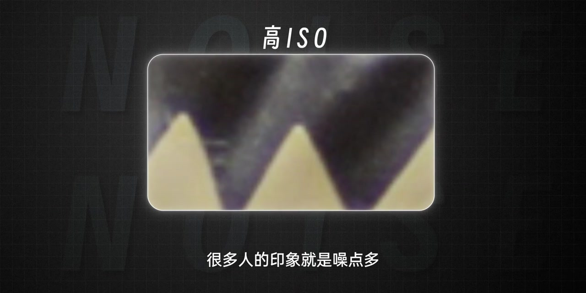
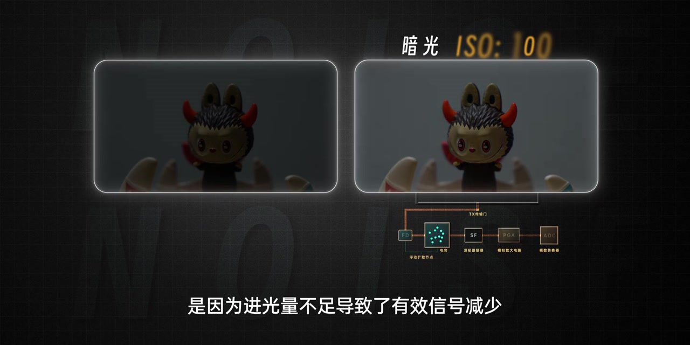
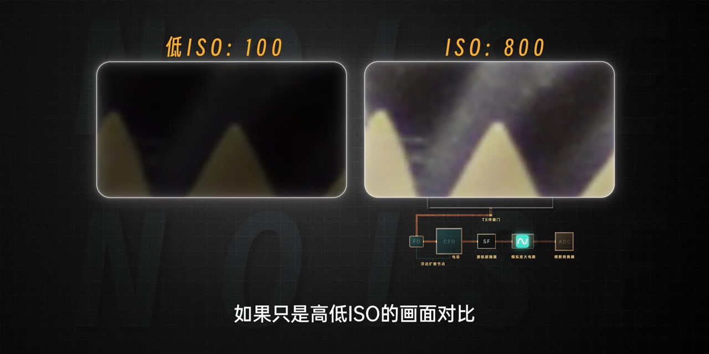
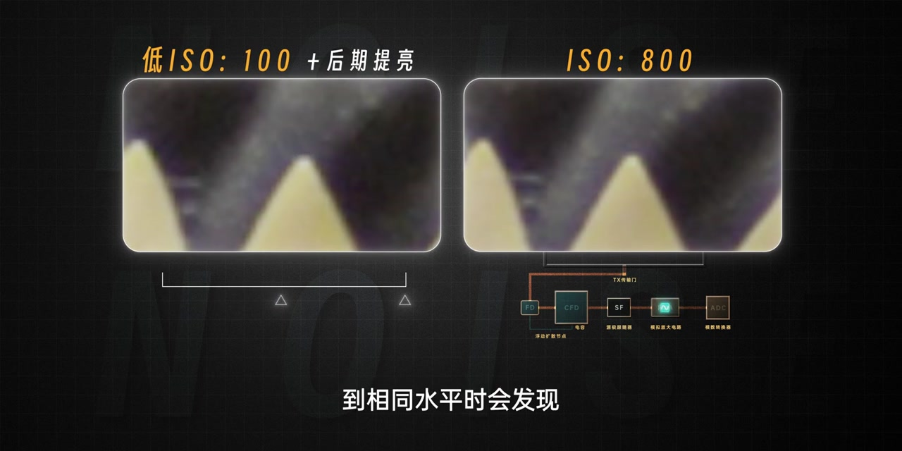
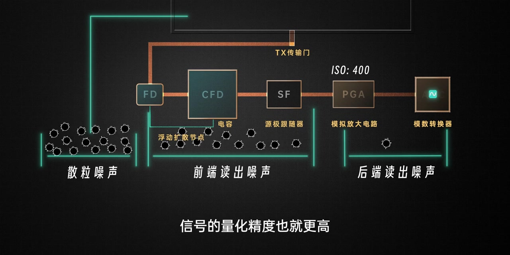
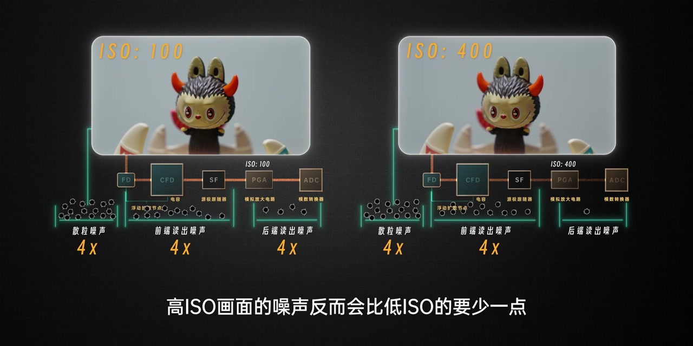
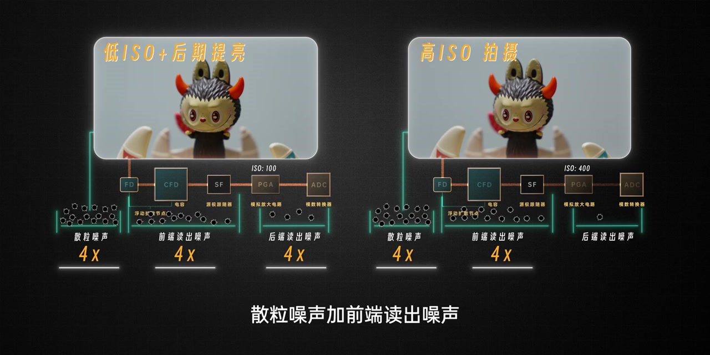
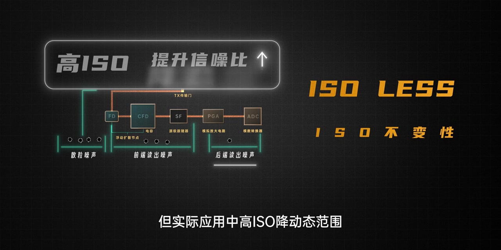

开场：大家对高 ISO 的第一印象就是噪点多
深灰网格底上，「高 ISO」大字压在放大噪点画面上。旁白承认：从结果导向看，这个印象非常正确——暗光里把 ISO 拧高，画面更容易看出噪声。但紧接着抛出真正的问题：怎么比较？
画面字幕：「很多人的印象就是噪点多」
说明：Whisper 常把「噪点」识成「造点」，「进光量」识成「近光量」，「散粒噪声」识成「散立噪声」，「信噪比」识成「新造比 / 新脑比」，「电压摆幅」识成「电压百幅」，「量化精度 / 量化噪声」识成「亮画精度 / 亮画噪声」，「低 ISO」识成「DISO」，「抑制」识成「意志」，「降动态范围」识成「将动态范围」，「Base ISO」识成「BassISO」。下文叙述以可见字幕与动画为准；页面末尾仍完整保留全部 Whisper 分段。

动画先落到暗光 ISO 100：玩偶主体几乎沉在黑里，旁边画出读出链路 TX→FD→电容→SF→PGA→ADC。旁白点明根因——进光量不足导致有效信号减少；这时再靠提高 ISO 强行提亮，信号和噪声会被一起放大，噪声也就更显眼。

关键纠偏：别只比「直接出片亮度」
左右对照很直观：低 ISO 100 几乎全黑，ISO 800 主体亮了但噪点也更明显。如果只拿这种「高低 ISO 直出」对比，结论显而易见。旁白改规则：把低 ISO 拍的画面后期提亮到相同水平，再看噪点——差别竟然不大，甚至高 ISO 还稍微好一点。
旁白：「甚至高ISO的画面还要稍微好一点」


电路层：进光量固定后，比的是哪一段噪声被放大
旁白解释：进光量一旦确定，散粒噪声与前端读出噪声的信噪比也就大致定了。相对基准 ISO 100，用 ISO 400 可以让电压直接放大 4 倍；ADC 收到更高电压摆幅，量化精度更高，还能顺带压制 PGA 到 ADC 之间的后端读出噪声。
画面把噪声分成三段：散粒噪声、前端读出噪声（FD / 电容 / SF）、后端读出噪声（PGA / ADC）。直看 ISO 400 画面，确实比 ISO 100 更噪——因为散粒噪声和前端读出噪声都被放大了 4 倍。
画面字幕：「信号的量化精度也就更高」

同亮度结论：高 ISO「少」的是后端读出噪声
把 ISO 100 提亮到同一亮度后，散粒噪声、前端读出噪声和后端读出噪声都会被放大 4 倍。于是在同一亮度水平比较时，高 ISO 画面的噪声反而少一点——少的那一点，正是后端读出噪声。
动画用对照卡收束：前期低 ISO + 后期提亮，会共同放大三段噪声；前期高 ISO 只放大散粒噪声与前端读出噪声，后端读出噪声基本不变。结论：提高 ISO 反而能提升一点点信噪比。
画面字幕：「高ISO画面的噪声反而会比低ISO的要少一点」


别无脑拉高：现代机身的 ISO 不变性
旁白立刻刹车：暗光环境是不是就可以无脑提高 ISO？那倒也不是。现阶段很多相机对读出噪声抑制已经很优秀，尤其后端读出噪声占比更小，高 ISO 带来的后端噪声收益并不明显——这就是常说的 ISO 不变性（画面打出 ISO LESS / ISO 不变性）。
理论上高 ISO 能压制后端读出噪声、抬一点信噪比；但实际应用里高 ISO 会降动态范围，再加上 ISO 不变性，仍要根据创作环境和意图取舍。
画面字幕：「但实际应用中高ISO降动态范围」

场景决策：提亮主体用高 ISO，保高光用 Base ISO
光线不足、只想把主体拍清楚、对动态范围没有更高要求时，可以大胆提升 ISO——既能拍到合适亮度，还能赚一点点信噪比，也不会比低 ISO 再后期提亮更噪。
但光比较大、又想保留高光细节时，就用基准 ISO（Base ISO），最大程度保住动态范围；因为 ISO 不变性，后期提亮也不至于明显损失信噪比。
旁白：「不难发现ISO的高低没有绝对的好坏……我们真正要掌控的是平衡」
收尾把 ISO 拉回曝光三要素语境：光圈、快门也没有定数；不同场景、不同表达可以有不同组合。真正要掌控的是平衡——平衡曝光、景深、动态模糊、信噪比、动态范围，以及每一次拍摄的光影与技术。就像掌控曝光，掌控的从来都不只是曝光。